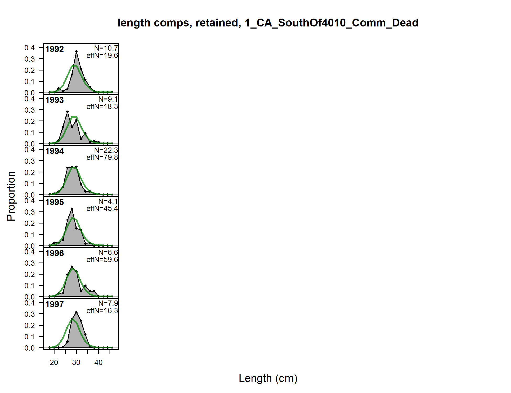
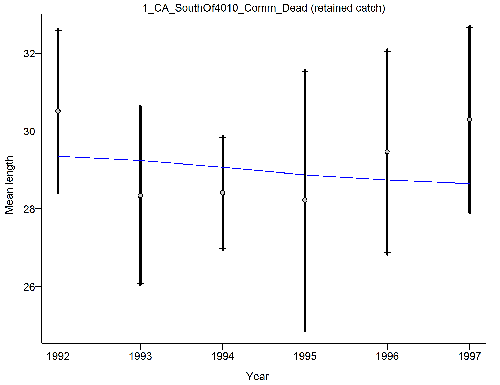
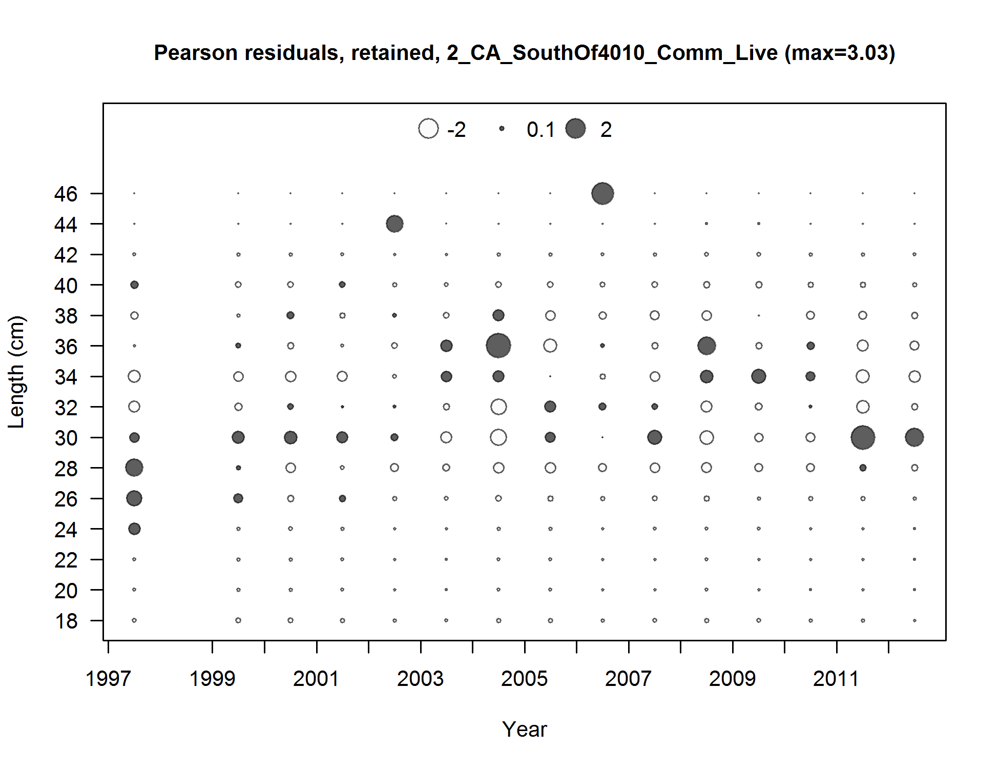
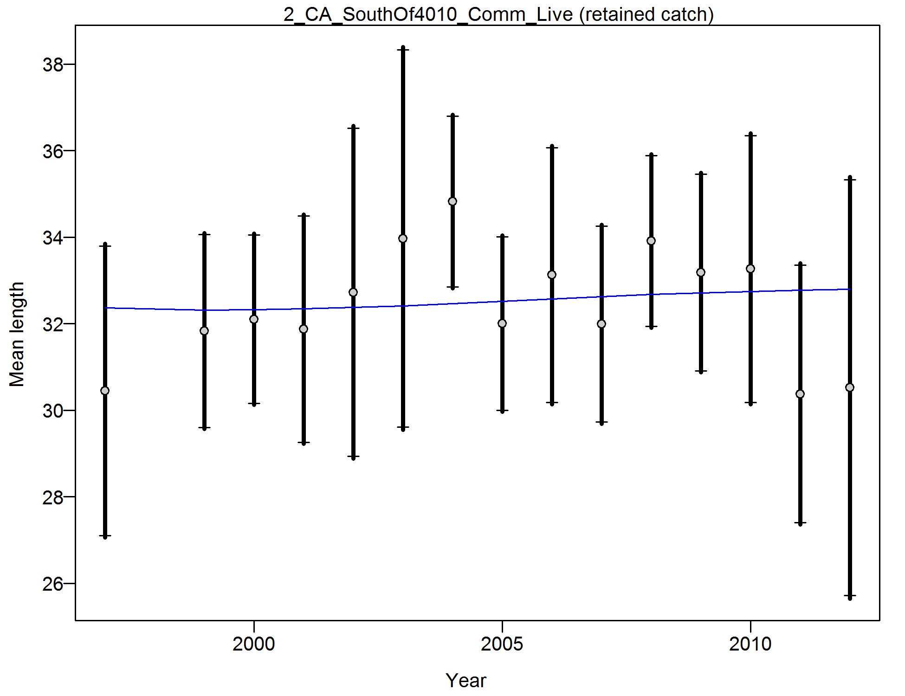
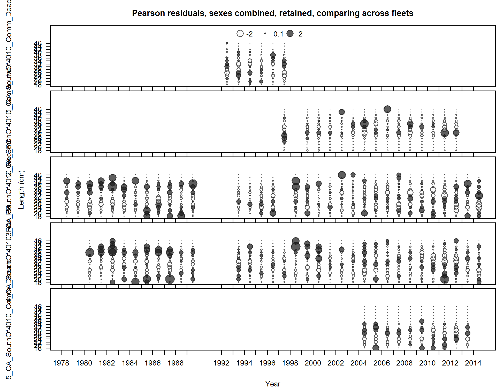

{kind=link}

Pearson residuals, retained, 1_CA_SouthOf4010_Comm_Dead (max=1.11)
Closed bubbles are positive residuals (observed > expected) and open bubbles are negative residuals (observed < expected).
file: comp_lenfit_residsflt1mkt2.png

length comps, retained, 1_CA_SouthOf4010_Comm_Dead
file: comp_lenfit_flt1mkt2.png
Pearson residuals, retained, 1_CA_SouthOf4010_Comm_Dead (max=1.11)
Closed bubbles are positive residuals (observed > expected) and open bubbles are negative residuals (observed < expected).
file: comp_lenfit_residsflt1mkt2.png
N-EffN comparison, length comps, retained, 1_CA_SouthOf4010_Comm_Dead
file: comp_lenfit_sampsize_flt1mkt2.png

Francis data weighting method TA1.8 1_CA_SouthOf4010_Comm_Dead
Suggested sample size adjustment (with 95% interval) for len data from 1_CA_SouthOf4010_Comm_Dead:
1.0515 (0.7948-6.6754)
file: comp_lenfit_data_weighting_TA1.8_1_CA_SouthOf4010_Comm_Dead.png

length comps, retained, 2_CA_SouthOf4010_Comm_Live
file: comp_lenfit_flt2mkt2.png

Pearson residuals, retained, 2_CA_SouthOf4010_Comm_Live (max=6.04)
Closed bubbles are positive residuals (observed > expected) and open bubbles are negative residuals (observed < expected).
file: comp_lenfit_residsflt2mkt2.png

N-EffN comparison, length comps, retained, 2_CA_SouthOf4010_Comm_Live
file: comp_lenfit_sampsize_flt2mkt2.png

Francis data weighting method TA1.8 2_CA_SouthOf4010_Comm_Live
Suggested sample size adjustment (with 95% interval) for len data from 2_CA_SouthOf4010_Comm_Live:
1.0078 (0.6342-3.8644)
file: comp_lenfit_data_weighting_TA1.8_2_CA_SouthOf4010_Comm_Live.png

length comps, discard, 2_CA_SouthOf4010_Comm_Live
file: comp_lenfit_flt2mkt1.png

Pearson residuals, discard, 2_CA_SouthOf4010_Comm_Live (max=4.1)
Closed bubbles are positive residuals (observed > expected) and open bubbles are negative residuals (observed < expected).
file: comp_lenfit_residsflt2mkt1.png

N-EffN comparison, length comps, discard, 2_CA_SouthOf4010_Comm_Live
file: comp_lenfit_sampsize_flt2mkt1.png
Francis data weighting method TA1.8 2_CA_SouthOf4010_Comm_Live
Suggested sample size adjustment (with 95% interval) for len data from 2_CA_SouthOf4010_Comm_Live:
1.0078 (0.6368-3.4829)
file: comp_lenfit_data_weighting_TA1.8_2_CA_SouthOf4010_Comm_Live.png

length comps, whole catch, 3_CA_SouthOf4010_Rec_PC (plot 1 of 3)
file: comp_lenfit_flt3mkt0_page1.png

length comps, whole catch, 3_CA_SouthOf4010_Rec_PC (plot 2 of 3)
file: comp_lenfit_flt3mkt0_page2.png

length comps, whole catch, 3_CA_SouthOf4010_Rec_PC (plot 3 of 3)
file: comp_lenfit_flt3mkt0_page3.png

Pearson residuals, whole catch, 3_CA_SouthOf4010_Rec_PC (max=4.59) (plot 3 of 3)
Closed bubbles are positive residuals (observed > expected) and open bubbles are negative residuals (observed < expected).
file: comp_lenfit_residsflt3mkt0_page3.png

N-EffN comparison, length comps, whole catch, 3_CA_SouthOf4010_Rec_PC
file: comp_lenfit_sampsize_flt3mkt0.png
Francis data weighting method TA1.8 3_CA_SouthOf4010_Rec_PC
Suggested sample size adjustment (with 95% interval) for len data from 3_CA_SouthOf4010_Rec_PC:
0.7941 (0.5828-1.3057)
file: comp_lenfit_data_weighting_TA1.8_3_CA_SouthOf4010_Rec_PC.png

length comps, whole catch, 4_CA_SouthOf4010_Rec_PR (plot 1 of 2)
file: comp_lenfit_flt4mkt0_page1.png

length comps, whole catch, 4_CA_SouthOf4010_Rec_PR (plot 2 of 2)
file: comp_lenfit_flt4mkt0_page2.png

Pearson residuals, whole catch, 4_CA_SouthOf4010_Rec_PR (max=4.56) (plot 2 of 2)
Closed bubbles are positive residuals (observed > expected) and open bubbles are negative residuals (observed < expected).
file: comp_lenfit_residsflt4mkt0_page2.png

N-EffN comparison, length comps, whole catch, 4_CA_SouthOf4010_Rec_PR
file: comp_lenfit_sampsize_flt4mkt0.png

Francis data weighting method TA1.8 4_CA_SouthOf4010_Rec_PR
Suggested sample size adjustment (with 95% interval) for len data from 4_CA_SouthOf4010_Rec_PR:
0.9705 (0.5987-2.1555)
file: comp_lenfit_data_weighting_TA1.8_4_CA_SouthOf4010_Rec_PR.png

length comps, whole catch, 5_CA_SouthOf4010_Rec_PC_DWV_index
file: comp_lenfit_flt5mkt0.png

Pearson residuals, whole catch, 5_CA_SouthOf4010_Rec_PC_DWV_index (max=3.35)
Closed bubbles are positive residuals (observed > expected) and open bubbles are negative residuals (observed < expected).
file: comp_lenfit_residsflt5mkt0.png

N-EffN comparison, length comps, whole catch, 5_CA_SouthOf4010_Rec_PC_DWV_index
file: comp_lenfit_sampsize_flt5mkt0.png

Francis data weighting method TA1.8 5_CA_SouthOf4010_Rec_PC_DWV_index
Suggested sample size adjustment (with 95% interval) for len data from 5_CA_SouthOf4010_Rec_PC_DWV_index:
1.8039 (1.1744-4.9572)
file: comp_lenfit_data_weighting_TA1.8_5_CA_SouthOf4010_Rec_PC_DWV_index.png

length comps, whole catch, 7_CA_SouthOf4010_CCFRP_comps_only
file: comp_lenfit_flt7mkt0.png

Pearson residuals, whole catch, 7_CA_SouthOf4010_CCFRP_comps_only (max=5)
Closed bubbles are positive residuals (observed > expected) and open bubbles are negative residuals (observed < expected).
file: comp_lenfit_residsflt7mkt0.png

N-EffN comparison, length comps, whole catch, 7_CA_SouthOf4010_CCFRP_comps_only
file: comp_lenfit_sampsize_flt7mkt0.png

Francis data weighting method TA1.8 7_CA_SouthOf4010_CCFRP_comps_only
Suggested sample size adjustment (with 95% interval) for len data from 7_CA_SouthOf4010_CCFRP_comps_only:
0.961 (0.4983-13.1073)
file: comp_lenfit_data_weighting_TA1.8_7_CA_SouthOf4010_CCFRP_comps_only.png

length comps, retained, aggregated across time by fleet
file: comp_lenfit_mkt2_aggregated_across_time.png

length comps, discard, aggregated across time by fleet
file: comp_lenfit_mkt1_aggregated_across_time.png

length comps, whole catch, aggregated across time by fleet
file: comp_lenfit_mkt0_aggregated_across_time.png

Note: this plot doesn't seem to be working right for some models.
Pearson residuals, sexes combined, retained, comparing across fleets
Closed bubbles are positive residuals (observed > expected) and open bubbles are negative residuals (observed < expected).
file: comp_lenfit_sex1mkt2_multi-fleet_comparison.png

Note: this plot doesn't seem to be working right for some models.
Pearson residuals, sexes combined, discard, comparing across fleets
Closed bubbles are positive residuals (observed > expected) and open bubbles are negative residuals (observed < expected).
file: comp_lenfit_sex1mkt1_multi-fleet_comparison.png

Note: this plot doesn't seem to be working right for some models.
Pearson residuals, sexes combined, whole catch, comparing across fleets
Closed bubbles are positive residuals (observed > expected) and open bubbles are negative residuals (observed < expected).
file: comp_lenfit_sex1mkt0_multi-fleet_comparison.png

ghost length comps, whole catch, 3_CA_SouthOf4010_Rec_PC
file: comp_gstlenfit_flt3mkt0.png
Pearson residuals, whole catch, 3_CA_SouthOf4010_Rec_PC (max=NA)
Closed bubbles are positive residuals (observed > expected) and open bubbles are negative residuals (observed < expected).
file: comp_gstlenfit_residsflt3mkt0.png

ghost length comps, whole catch, 4_CA_SouthOf4010_Rec_PR
file: comp_gstlenfit_flt4mkt0.png

Pearson residuals, whole catch, 4_CA_SouthOf4010_Rec_PR (max=NA)
Closed bubbles are positive residuals (observed > expected) and open bubbles are negative residuals (observed < expected).
file: comp_gstlenfit_residsflt4mkt0.png
{kind=link}
{kind=link}
{kind=link}
{kind=link}
{kind=link}
{kind=link}
{kind=link}